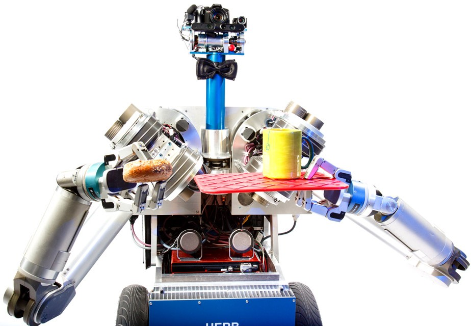

HERB (Home Exploring Robot Butler) - Motion Planning
HERB is a bimanual mobile manipulator comprised of two 7-DoF Barrett WAM arms on a Neobotix base, and Pan-Tilt Schunk PW70 for a neck. I work on developing the motion planning algorithms for the robot to enable the simultaneous execution of it's arms.

KRSSG (Kharagpur RoboSoccer Students' Group) SSL Robots - Full Stack
KRSSG SSL Robots are four-wheel omni-drive based robots made from scratch by its member students. I work on deploying our FSM architecture based codebase on the robots with the aim of competing in the annual RoboCup Competition.